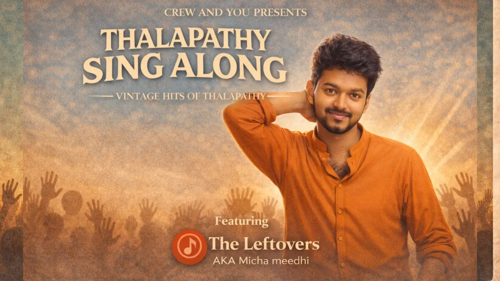

Thalapathy Sing-Along Night
Vintage Hits Special • Open Mic • Fan Jam
📅 Sun, 22 Feb • 6:00 PM
📍 Arangam Art Space, Ashok Nagar
Entry Fee
₹280
About the Event
Join us for a nostalgic evening celebrating the timeless charm of Thalapathy's vintage hits. The Thalapathy Sing-Along Night Vintage Special is bringing fans together for a night filled with music and pure vibes.
This event features an open mic session where fans are free to sing, speak, or perform anything inspired by Thalapathy. Whether you want to relive iconic songs or share your admiration, this space is open to everyone.
Event Guide
- Language: Tamil
- Duration: 2 hrs
- Age Limit: Open to all ages